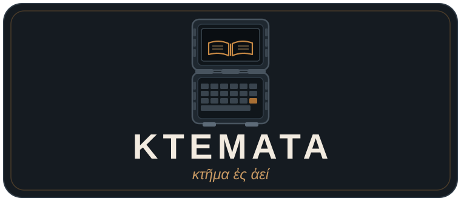

“A possession for all time”
A rugged offline-library handheld with a very low power consumption: Raspberry Pi5 4Gb, a 5″ touch display, a 2S 18650 UPS and a compact keyboard in a sturdy case. It keeps Wikipedia, maps, manuals and books on the device — no network, no account, no cloud. Charged by solar and/or axial-flux hand crank if mains power is not available. Content is managed with Project NOMAD.
The name
Ktemata (κτήματα) is Greek for “possessions, things owned”. Thucydides opens his History of the Peloponnesian War by calling his work κτῆμα ἐς ἀεί, “a possession for all time”: written down so that what happened stays available to whoever comes later. That is the device’s job.
The build
- Computer
- Raspberry Pi 5
- Display
- Raspberry Pi Touch Display 2, 5″ (143.4 × 91.46 mm)
- Input
- Rii K06 keyboard with touchpad
- Power
- Waveshare UPS HAT (B), 2× 18650 in 2S, 8.4 V DC charge input
- Wi-Fi
- Configured as a Wi-Fi hotspot for max 20 clients
- Charge
- Mains, solar or axial-flux hand crank generator
- Content Management
- Project NOMAD
- Inner case
- Custom parametric cassette (3D stl files available)
- Outer case
- Sturdy Peli Case 1200 (IP67 certified)
Explore
- Power what it draws and what the pack gives back
- See how it compares with the Prepper Disk and Project NOMAD
- [WIP] Everything for the device build — geometry, drawings, STLs, renders and notes — lives in the repository: github.com/jsoeterbroek/ktemata
- [WIP] Everything for the compatible axial-flux hand crank generator build — geometry, drawings, STLs, renders and notes — lives in the repository: github.com/jsoeterbroek/handcrank
Use at your own risk
This is a hobby project, published as-is, with no warranty of any kind. The case and the wiring information are design proposals, not certified hardware. You are responsible for your own build: check the fit of your parts, verify polarity and fusing before connecting lithium cells, and never leave a charging pack unattended. Anything you print, assemble or power up is at your own risk; the author accepts no liability for damage, injury, data loss or fire.